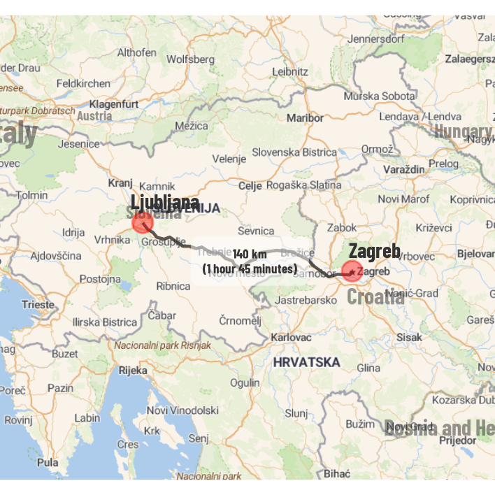

Driving Directions using Open Street Maps Routing Service
Using {tidygeocoder}, {osrm}, {sf}, {tidyverse} and {ggmap} along with Open Source Techniques to plot driving directions along various cities in Europe in the norther-Mediterranean region
Author
Aditya Dahiya
Published
October 26, 2024
This code provides a detailed methodology for creating a visually informative route map for a driving trip along the northern Mediterranean, integrating data visualization, spatial data handling, and Open Street Maps (OSM) routing services in R. Utilizing several packages, including {sf}(Pebesma and Bivand 2023) for spatial data and {tidygeocoder}(Cambon et al. 2021) for geocoding, the code transforms a dataset of locations into spatial coordinates. By accessing OSRM (Open Source Routing Machine) through the {osrm}(Giraud 2022)package, the code calculates and visualizes optimized driving routes between selected cities. Distances and travel durations are formatted using custom functions, enhancing the map’s usability and clarity.
The geospatial data is presented using {ggplot2}(Wickham 2016) with additional styling from {ggrepel}(Slowikowski 2024) for labels and {patchwork}(Pedersen 2024) to arrange plots. Base map layers are sourced from {rnaturalearth}(Massicotte and South 2023) and a refined background layer is added using {ggmap} with Stadia map tiles, adjusted to EPSG:3857 using custom bounding box functions. This layering enables effective visualization of routes on custom raster maps. The code’s structure allows for modifications, such as changing cities or map styling, demonstrating the adaptability of R’s spatial data packages in route mapping and driving directions creation.
Inspired from this tutorial(Heiss 2023)titled “How to make fancy road trip maps with R and OpenStreetMap”.
Step 1: Setting up basics
This code initializes an R project for geospatial data analysis and visualization, utilizing multiple packages for enhanced map presentation, styling, and data wrangling:
Data Handling & Visualization: Packages like tidyverse provide core data manipulation tools and ggplot2 for visualizations.
Spatial Data Management: sf simplifies handling spatial objects in a tidy framework, and osrm connects R to the Open Source Routing Machine for geospatial route calculations.
Map Enhancements: ggspatial adds visual elements like scale bars; ggrepel prevents overlapping labels for clear visuals.
Custom Fonts: sysfonts and showtext allow use of Google Fonts, applied through a custom theme.
Plot Layouts & Tables: patchwork enables combining ggplot plots, and gt produces elegant HTML tables.
The code defines custom fonts for plot titles and body text using Google Fonts (e.g., “Barlow”) and sets up a theme function, theme_drive, for applying a modern, minimal aesthetic in ggplot2. It also specifies text color and font-family defaults for labels in plots.
Code
library(tidyverse) # Data Wrangling and ggplot2library(sf) # Handle spatial data in R in a tidy waylibrary(tidygeocoder) # Automated geocoding of addresseslibrary(osrm) # Access OSRM through Rlibrary(ggrepel) # Nicer non-overlapping labelslibrary(glue) # Easier string interpolationlibrary(scales) # Nicer labeling functionslibrary(patchwork) # Combine plots made in ggplot2library(ggspatial) # Nicer map features like scale barslibrary(showtext) # Displaying google fontslibrary(sysfonts) # Getting google fonts into Rlibrary(gt) # Displaying beautiful HTML tables # A font for the titles and major pointssysfonts::font_add_google("Barlow", "title_font")# A font for the body and textsysfonts::font_add_google("Barlow Condensed", "body_font")# Allow R graphics devices to display these fontsshowtext::showtext_auto()# Text colourtext_col <-"grey20"# Custom ggplot theme to make pretty plots# Get the font at https://fonts.google.com/specimen/Overpasstheme_drive <-function(...) {theme_void(base_family ="body_font",base_size =14 ) +theme(text =element_text(colour = text_col,family ="body_font",hjust =0.5 ), ... )}# Make labels use the fonts specified by defaultupdate_geom_defaults("label_repel", list(family ="body_font",colour = text_col))update_geom_defaults("label", list(family ="body_font",colour = text_col))update_geom_defaults("text_repel", list(family ="body_font",colour = text_col))update_geom_defaults("text", list(family ="body_font",colour = text_col))
Step 2: A Road Trip Plan
Let us plan a road trip along the northern shores of the Mediterranean Sea, hopping along the famous sites in the capitals and important cities of some countries. This code snippet uses R to create a table of famous attractions across several European countries, geocodes each location to obtain its latitude and longitude, and displays the data in a formatted table with map coordinates:
Data Setup: A sample dataset is created with columns for country, capital, attraction, and address using dplyr.
Geocoding: The tidygeocoder package is used to automatically retrieve latitude and longitude coordinates based on the address, using OpenStreetMap’s geocoding service.
Spatial Transformation: Once coordinates are obtained, sf converts them into a simple feature (SF) object, setting the coordinate system to EPSG:4326 for geographic data.
Tabular Display: The data is formatted as a stylish HTML table using gt and gtExtras for theme styling.
Code
library(tidyverse)library(sf)library(gt)rawdata <- dplyr::tribble(~id, ~country, ~capital, ~attraction, ~address,1, "Greece", "Athens", "Acropolis Museum", "15 Dionysiou Areopagitou St, Athens 11742",2, "Albania", "Tirana", "Skanderbeg Square", "Sheshi Skënderbej, Tirana 1001",3, "Montenegro", "Podgorica", "Millennium Bridge", "Cetinjski Put, Podgorica 81000",4, "Bosnia and Herzegovina","Sarajevo", "Baščaršija (Old Bazaar)", "Baščaršija, Sarajevo 71000",5, "Croatia", "Zagreb", "Ban Jelačić Square", "Trg bana Josipa Jelačića, Zagreb 10000",6, "Slovenia", "Ljubljana", "Ljubljana Castle", "Grajska planota 1, Ljubljana 1000",7, "Italy", "Venice", "St. Mark's Basilica", "Piazza San Marco, Venice 30124",8, "Italy", "Florence", "Piazza del Duomo", "Piazza del Duomo, Florence 50122",9, "Italy", "Rome", "Trevi Fountain", "Piazza di Trevi, Rome 00187")# Convert latitude and longitudes into SF Coordinatesdf <- rawdata |># Compile a full address to be used for finding the coordinates# mutate(# address = paste(# destination,# capital, # country,# sep = ", "# )# ) |> tidygeocoder::geocode(address = address,# country = country,# city = capital,method ="osm" ) |>st_as_sf(coords =c("long", "lat"),crs =st_crs("EPSG:4326") )df |>gt() |>tab_header(title ="The locations (Geometry) of the planned destinations",subtitle ="Getting Geometry locations using geocode() from {tidygeocoder}" ) |> gtExtras::gt_theme_538()
Table 1: The data to be used for further analysis
The locations (Geometry) of the planned destinations
Getting Geometry locations using geocode() from {tidygeocoder}
id
country
capital
attraction
address
geometry
1
Greece
Athens
Acropolis Museum
15 Dionysiou Areopagitou St, Athens 11742
c(23.7302954, 37.9303789)
2
Albania
Tirana
Skanderbeg Square
Sheshi Skënderbej, Tirana 1001
c(19.8182412, 41.3271148)
3
Montenegro
Podgorica
Millennium Bridge
Cetinjski Put, Podgorica 81000
c(19.2436765, 42.4413965)
4
Bosnia and Herzegovina
Sarajevo
Baščaršija (Old Bazaar)
Baščaršija, Sarajevo 71000
c(18.430885, 43.8590435)
5
Croatia
Zagreb
Ban Jelačić Square
Trg bana Josipa Jelačića, Zagreb 10000
c(15.9765701, 45.8130054)
6
Slovenia
Ljubljana
Ljubljana Castle
Grajska planota 1, Ljubljana 1000
c(14.5085094926128, 46.0488354)
7
Italy
Venice
St. Mark's Basilica
Piazza San Marco, Venice 30124
c(12.3385088944988, 45.4342591)
8
Italy
Florence
Piazza del Duomo
Piazza del Duomo, Florence 50122
c(11.2554773666595, 43.7731014)
9
Italy
Rome
Trevi Fountain
Piazza di Trevi, Rome 00187
c(12.4836123990993, 41.90089955)
Step 3: Some Custom Functions
This code defines a set of custom functions in R to format durations, distances, and handle conversions between different units, useful for working with geographic and travel data:
Formatting Durations: fmt_duration() takes an input in minutes and converts it into a readable string format. Durations are rounded to the nearest 15 minutes and formatted to display in hours and minutes. When durations exceed 24 hours, days are factored into the calculation by converting them to hours for accurate display.
Distance Formatting:
fmt_miles and fmt_km utilize scales::label_number() to format distances in miles and kilometers, respectively, with suffixes and thousand separators for clarity.
Distance Conversions: Functions for converting between miles, meters, and kilometers:
miles_to_meters() converts miles to meters.
meters_to_miles() and km_to_miles() handle conversions from meters and kilometers to miles.
Code
# Credits: Andrew Weiss# URL: https://www.andrewheiss.com/blog/2023/06/01/# geocoding-routing-openstreetmap-r/#packages-and-functions# Format duration in minutes and hours# This function takes a numeric input of a duration in minutes,# rounds it to the nearest 15 minutes, and formats the result as a string# indicating the number of hours and minutes in the duration.fmt_duration <-function(x) {# Round to the nearest 15 minutes n_seconds <-round(seconds(x *60) / (15*60)) * (15*60) n_seconds <-seconds_to_period(n_seconds) out <-map_chr(n_seconds, \(n) {if (seconds(n) <=59) {# If this is less than an hour, don't format anything with hoursglue("{MM} minutes", MM =minute(n)) } else {# The formatting is required in terms of hours only. When the # duration exceeds 24 hours, `seconds_to_period()` converts the # duration into days (e.g., `seconds_to_period(60 * 60 * 24)` returns # "1d 0H 0M 0S") and displays zero hours. Therefore, the day portion # of the period is extracted, multiplied by 24, and added to the # hour component intended for display. extra_day_hours <-day(n) *24glue("{HH} hour{s} {MM} minutes",HH = scales::label_comma()(hour(n) + extra_day_hours),MM =minute(n),s =ifelse(hour(n) ==1, "", "s") ) } })return(out)}fmt_miles <- scales::label_number(accuracy =10, suffix =" miles", big.mark ="," )fmt_km <- scales::label_number(accuracy =10, suffix =" km", big.mark ="," )miles_to_meters <-function(x) { x *1609.344}meters_to_miles <-function(x) { x /1609.344}km_to_miles <-function(x) {meters_to_miles(x *1000)}
Step 4: The base map and the driving locations
This code creates a custom map showing key tourist attractions within the calculated bounding box of selected European countries:
Bounding Box Calculation:
The bounding box for mapped points is set with an additional degree of expansion (edi), extending the box slightly around all locations. This is calculated with st_bbox() using geometries in df.
Basemap Creation:
A basemap of European countries is created using rnaturalearth data, filtering out small states like Vatican City and San Marino. The map’s area data is computed for further customization if needed.
Map Plotting:
ggplot2 and sf add visual layers:
Country boundaries as background with geom_sf().
Country names with partially transparent, bold labels via geom_sf_text().
Tourist attraction points and city names using red markers and labels.
Code
# Compute the bounding box for the maps# Expansion outside bounding box in degrees = ediedi =0.5drive_bbox <-st_bbox(df$geometry) +c(-2* edi, -2.5* edi, edi, edi)basemap <- rnaturalearth::ne_countries(scale =50) |>select(name, iso_a3, geometry) |>filter(!(name %in%c("Vatican", "San Marino"))) |>st_crop(drive_bbox) |>mutate(area =as.numeric(st_area(geometry)))g <-ggplot(basemap) +geom_sf() +geom_sf_text(mapping =aes(label = name ),alpha =0.5,fontface ="bold",nudge_y =+0.3 ) +geom_sf(data = df,colour ="darkred",size =2,alpha =0.5 ) +geom_sf_text(data = df,mapping =aes(label = capital),colour ="darkred",nudge_y =-0.2 ) +labs(x =NULL, y =NULL)ggsave(filename = here::here("geocomputation", "images","osm_driving_directions_4.png"),plot = g,height =900,width =900,units ="px",bg ="white")
Figure 1: A basic map showing the selected cities and the map of selected countries using data available in {rnaturalearth} and ne_countries()
Step 5: Getting the Routes and a raw map of the routes
This code generates a visual map illustrating the shortest driving routes between selected European cities, based on OpenStreetMap data:
Route Data Preparation:
Starting with df (containing cities and their coordinates), cities are paired sequentially as origins and destinations using lead(). The data is trimmed to exclude the final unpaired row.
osrmRoute() retrieves the shortest driving route between each origin and destination pair, with the computed route details stored in a nested column named route.
Unnesting and Formatting:
The route column is expanded to reveal route-specific data (geometry, distance, duration). Route geometry is then set as the primary spatial feature.
Custom functions fmt_km() and fmt_duration() format the route’s distance and duration for clear labeling.
Map Plotting:
ggplot2 visualizes the data in layers:
A basemap of European countries, created earlier, serves as the background.
Cities are marked in red, with labels for capital cities slightly adjusted for readability.
Driving routes between cities are drawn as connecting lines using the computed route_geometry.
Code
dfroutes <- df|>rename(origin_geometry = geometry,origin_city = capital ) |>mutate(destination_geometry =lead(origin_geometry),destination_city =lead(origin_city) ) |>slice_head(n = (nrow(df) -1)) |># Let functions compute on our data frame a row-at-a-timerowwise() |># Getting the shortest route between the two citiesmutate(route =osrmRoute(src = origin_geometry, dst = destination_geometry) ) |># The route details are stored in a nested list column called `route`, # which we’ll unnest. This produces a data frame with three geometry # columns—for origin, destination, and route—so we’ll set the route # column as the primary geometry (allowing us to use `geom_sf(data = routes_geocoded)` directly).unnest(route, names_sep ="_") |>st_set_geometry("route_geometry") |>mutate(distance_text =fmt_km(route_distance),duration_text =fmt_duration(route_duration) )
Figure 2: A simple map of the country boundaries [from {rnaturalearth} and function ne_countries()] with the route computed by osrmRoute() from {osrm} and selected destination cities as red dots.
Step 6: A nice Stadia Map background map
This code retrieves and customizes a basemap using Stadia Maps, overlaying it with geospatial data in EPSG:3857, a coordinate reference system commonly used for web mapping.
API Setup:
The Stadia Maps API is registered with the register_stadiamap() function, allowing access to map tiles.
Bounding Box Definition:
A bounding box (dv_bbox) is defined using the limits of the area of interest. The bounding box is adjusted to Stadia Maps’ format, setting boundaries based on longitude and latitude.
Fetching Map Tiles:
get_stadiamap() retrieves map tiles with terrain background style (maptype = "stamen_terrain_background"), appropriate for visualizing geographic contexts.
Coordinate System Transformation:
A custom function, ggmap_bbox(), redefines the map’s bounding box to EPSG:3857, necessary for layering sf objects over the raster map. This transformation is critical for accurate overlay alignment.
Map Overlay and Export:
Using ggmap(), the transformed Stadia basemap is displayed. The map, including overlaid geospatial features, is saved as a high-resolution image (osm_driving_directions_3.png) with ggsave().
Code
# ggmap::register_stadiamap("YOUR API KEY HERE")# A bounding box in the format c(lowerleftlon, lowerleftlat, upperrightlon, upperrightlat)dv_bbox <- drive_bboxnames(dv_bbox) <-c("left", "bottom", "right", "top")# Getting the map tilesbasemap2 <- ggmap::get_stadiamap(bbox = dv_bbox,zoom =7,maptype ="stamen_terrain_background")object.size(basemap2) |>print(units ="Mb")ggmap::ggmap(basemap2)# Starting the process of Overlaying the geom_sf() data on this# Most important is to add the inherit.aes = FALSE argument.# Step: 1: # Credits: https://stackoverflow.com/questions/47749078/how-to-put-a-geom-sf-produced-map-on-top-of-a-ggmap-produced-raster by andyteucher on StackOverFlow (https://stackoverflow.com/users/1736291/andyteucher)# Define a function to fix the bbox to be in CRS EPSG:3857ggmap_bbox <-function(map) {# Extract the bounding box (in lat/lon) from the ggmap# to a numeric vector, and set the names to what# sf::st_bbox expects: map_bbox <-setNames(unlist(attr(map, "bb")),c("ymin", "xmin", "ymax", "xmax") )# Coonvert the bbox to an sf polygon, transform it to 3857,# and convert back to a bbox (convoluted, but it works) bbox_3857 <-st_bbox(st_transform(st_as_sfc(st_bbox(map_bbox, crs =4326) ), 3857 ) )# Overwrite the bbox of the ggmap object with the transformed coordinatesattr(map, "bb")$ll.lat <- bbox_3857["ymin"]attr(map, "bb")$ll.lon <- bbox_3857["xmin"]attr(map, "bb")$ur.lat <- bbox_3857["ymax"]attr(map, "bb")$ur.lon <- bbox_3857["xmax"] map}# Use the function to convert our downloaded Raster Files into # the new CRS and new bounding box CRSbasemap_sf <-ggmap_bbox(basemap2)g <- ggmap::ggmap(basemap2) +labs(x =NULL, y =NULL)ggsave(filename = here::here("geocomputation", "images","osm_driving_directions_3.png"),plot = g,height =900,width =900,units ="px",bg ="white")
Figure 3: The base map retrieved in the form of raster tiles, from {ggmap} using get_stadia_maps() with the map style “Stamen Terrain Background”
Step 7: The overall visualization
This code snippet enhances the base map by overlaying spatial data, labels, and route details, creating a rich, layered map visualization with ggplot2 and ggmap. Here’s a breakdown of each step:
Basemap Layer:
Uses ggmap::ggmap(basemap_sf) to display the raster map tiles retrieved and adjusted to EPSG:3857, enabling overlays of geospatial objects.
Country Boundaries and Names:
geom_sf() with transparency and thin lines adds country outlines, while geom_sf_text() displays country names proportionally sized by area.
Driving Route:
The dfroutes dataset, containing route geometries between destinations, is layered with geom_sf(), color-coded for visibility.
City Locations and Labels:
geom_sf() highlights cities in red, while geom_text_repel() labels each city’s name, ensuring labels do not overlap with other map features.
Route Details:
geom_sf_label() displays distance labels along the route with partially transparent backgrounds, enhancing readability without cluttering.
Coordinate System and Styling:
coord_sf() is set to EPSG:3857, matching the basemap. The theme_void() removes unnecessary plot elements for a clean map-focused look, with additional styling adjustments.
Code
# The base map raster tilesg <- ggmap::ggmap(basemap_sf) +# Country boundariesgeom_sf(data = basemap,fill ="transparent",colour =alpha(text_col, 0.3),inherit.aes = F,linewidth =0.3 ) +# Country namesgeom_sf_text(data = basemap,mapping =aes(label = name, size = area),alpha =0.5,fontface ="bold",inherit.aes = F ) +scale_size_continuous(range =c(5, 12)) +# The driving routegeom_sf(data = dfroutes,mapping =aes(geometry = route_geometry ),inherit.aes = F,colour =alpha(text_col, 0.8),linewidth =0.5 ) +# The cities to be visitedgeom_sf(data = df,colour ="red",size =3, inherit.aes = F,alpha =0.5 ) +# Names of citiesgeom_text_repel(data = df,aes(label = capital,geometry = geometry ),inherit.aes = F,stat ="sf_coordinates",fontface ="bold",size =8 ) +# Route times and distancesgeom_sf_label(data = dfroutes,mapping =aes(label =paste0(distance_text) ),fill =alpha("white", 0.5),lineheight =0.3,inherit.aes = F,label.size =unit(0, "mm") ) +# Coordinates and Scalescoord_sf(crs =3857 ) +theme_void(base_size =40,base_family ="body_font" ) +theme(legend.position ="none",plot.margin =margin(0,0,0,0, "mm") )ggsave(filename = here::here("geocomputation", "images","osm_driving_directions_1.png"),plot = g,height =9.25,width =10,unit ="cm",bg ="white")
Figure 4: The completed overall visualization - with a base map of raster tiles from {ggmap} get_stadia_map(), overlaid country names and boundaries from {rnaturalearth} ne_countries(), and routes from {osrm} package.
Step 8: Each leg of the trip visualized separately
This code snippet generates individual map visualizations for each driving route using ggmap and ggplot2. Here’s an explanation of the process, which effectively creates a series of images showcasing routes between pairs of cities:
Loop through Routes:
The for loop iterates over each row of the dfroutes dataframe, which contains driving route data between origin and destination cities.
Define Temporary Bounding Box:
For each route, a temporary bounding box is created using the st_bbox() function and expanded slightly to ensure that the route is well-framed in the map view.
Retrieve Map Tiles:
The get_stadiamap() function fetches map tiles based on the temporary bounding box, specifying a zoom level and map type (e.g., “outdoors”).
Crop Basemap:
A cropped version of the original country basemap is created to match the bounding box of the current route, ensuring the country boundaries align with the area of interest.
Create Map Visualization:
ggmap::ggmap(temp_basemap) initializes the base map, onto which various layers are added:
Country Names: Displayed using geom_sf_text(), showing the names of countries within the bounding box.
Driving Route: The specific route for the current iteration is drawn using geom_sf().
Cities: Both the origin and destination cities are represented with red points using geom_sf().
City Labels: City names are added with geom_text_repel(), ensuring that they do not overlap with each other or other elements.
Route Details: Distance and duration information are displayed using geom_sf_label(), formatted neatly for clarity.
Finalizing the Map:
Coordinate System: Set to EPSG:3857 for compatibility with the base map.
Theme Adjustments: theme_void() is used to create a clean look, removing axes and grid lines.
This approach results in a series of visually consistent maps, each illustrating a distinct driving route between two cities, complete with detailed annotations and clear geographic context. The display is done using the Tabset Panels layout available in Quarto.
Code
for (i in1:nrow(dfroutes)) {# A bounding box in the format (left, right, top, bottom) for {ggmap} temp_bbox <-st_bbox( dfroutes |>slice(i) ) +c(-1, -1, 1, 1)names(temp_bbox) <-c("left", "bottom", "right", "top")# Getting the map tiles temp_basemap <- ggmap::get_stadiamap(bbox = temp_bbox,zoom =8,maptype ="outdoors" ) temp_basemap <-ggmap_bbox(temp_basemap)object.size(temp_basemap) |>print(units ="Mb") temp_baselinemap <-st_crop(basemap, temp_bbox)# The base map raster tiles g <- ggmap::ggmap(temp_basemap) +# Country boundaries# geom_sf(# data = temp_baselinemap,# fill = "transparent",# colour = alpha(text_col, 0.3),# inherit.aes = F,# linewidth = 0.3# ) +# Country namesgeom_sf_text(data = temp_baselinemap,mapping =aes(label = name, size = area),alpha =0.5,fontface ="bold",inherit.aes = F ) +scale_size_continuous(range =c(5, 12)) +# The driving routegeom_sf(data =slice(dfroutes, i),mapping =aes(geometry = route_geometry ),inherit.aes = F,colour =alpha(text_col, 0.8),linewidth =0.5 ) +# The cities to be visited: origingeom_sf(data =slice(dfroutes, i),mapping =aes(geometry = origin_geometry),colour ="red",size =3, inherit.aes = F,alpha =0.4 ) +# The cities to be visited: destinationgeom_sf(data =slice(dfroutes, i),mapping =aes(geometry = destination_geometry),colour ="red",size =3, inherit.aes = F,alpha =0.4 ) +# Names of cities: Origingeom_text_repel(data =slice(dfroutes, i),aes(label = origin_city,geometry = origin_geometry ),inherit.aes = F,stat ="sf_coordinates",fontface ="bold",size =8 ) +# Names of cities: Destinationgeom_text_repel(data =slice(dfroutes, i),aes(label = destination_city,geometry = destination_geometry ),inherit.aes = F,stat ="sf_coordinates",fontface ="bold",size =8 ) +# Route times and distancesgeom_sf_label(data =slice(dfroutes, i),mapping =aes(label =paste0( distance_text,"\n","(", duration_text,")" ) ),fill =alpha("white", 0.5),lineheight =0.3,inherit.aes = F,label.size =unit(0, "mm"),size =5,fontface ="bold" ) +# Coordinates and Scalescoord_sf(crs =3857 ) +theme_void(base_size =40,base_family ="body_font" ) +theme(legend.position ="none",plot.margin =margin(0,0,0,0, "mm") )ggsave(filename = here::here("geocomputation", "images",paste0("osm_driving_directions_leg", i, ".png")),plot = g,height =6,width =6,unit ="cm",bg ="white" )}
Figure 7: Day 3: Drive from Padogorica to Sarajevo.
Figure 8: Day 4: Drive from Sarajevo to Zagreb.

Figure 9: Day 5: Drive from Zagreb to Ljubljana.
Figure 10: Day 6: Drive from Ljubljana to Venice.
Figure 11: Day 7: Drive from Venice to Florence.
Figure 12: Day 8: Drive from Florence to Rome.
References
Cambon, Jesse, Diego Hernangómez, Christopher Belanger, and Daniel Possenriede. 2021. “Tidygeocoder: An r Package for Geocoding” 6: 3544. https://doi.org/10.21105/joss.03544.
Giraud, Timothée. 2022. “Osrm: Interface Between r and the OpenStreetMap-Based Routing Service OSRM” 7: 4574. https://doi.org/10.21105/joss.04574.